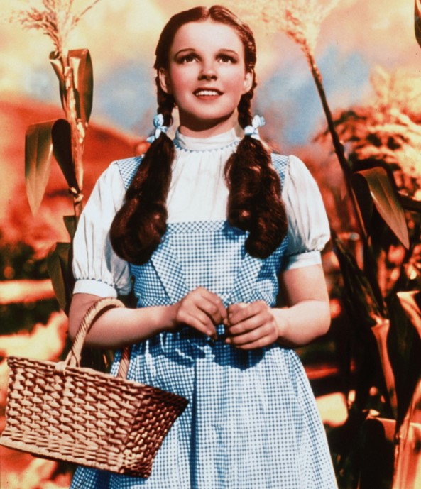
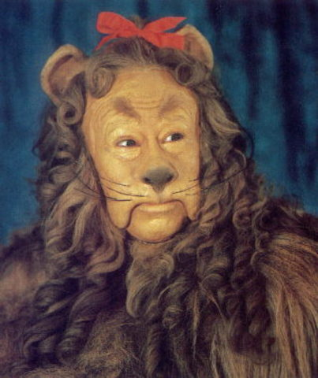

The Wizard of Oz is a 1939 American musical fantasy film
produced by Metro-Goldwyn-Mayer. Often seen as one of the greatest films of all time, it is the most commercially successful adaptation of L. Frank Baum's 1900 children's fantasy novel The Wonderful Wizard of Oz.[6] Directed primarily by Victor Fleming (who left the production to take over the troubled Gone with the Wind), the film stars Judy Garland as Dorothy Gale alongside Frank Morgan, Ray Bolger, Jack Haley, Bert Lahr, and Margaret Hamilton.
Friends of Oz
Dorothy

This is our main character.
Cowardly Lion
